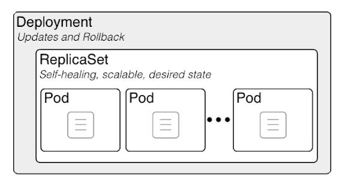

In this exercise, you will go through some of the core concepts of the Kubernetes technology.
#Outcomes
You should be able to:
- Understand the relationship between docker and kubernetes
- Organize your projects in namespaces
- Create deployments
- Get infos about your k8s different objects.
- Clean up
#Steps
4. Create a workspace for Kubernetes
Open a terminal on workstation (Applications > Utilities > Terminal) and run the following commands:
Switch to root user:
```
vagrant ssh master // if you are not connected to the master node
sudo -i
```
```
mkdir ~/concepts-lab // if not created
cd ~/concepts-lab
```
5. Create a Kubernetes Namespace
Namespaces are used to organize our work and keep track of every kubernetes object we create.
That's why we will create a namespace for this lab
```
kubectl create namespace concepts-lab // if not created
```
Output:
```
namespace/concepts-lab created
```
Now to check that we successfully created it, run this command
```
kubectl get namespaces
```
```
NAME STATUS AGE
concepts-lab Active 38s
default Active 13d
kube-node-lease Active 13d
kube-public Active 13d
kube-system Active 13d
```
In order to check all the kubernetes object available in our cluster, you can run:
```
kubectl get all --all-namespaces
```
```
NAMESPACE NAME READY STATUS RESTARTS AGE
kube-system pod/coredns-f9fd979d6-4fndq 1/1 Running 9 13d
kube-system pod/coredns-f9fd979d6-lctqx 1/1 Running 9 13d
kube-system pod/etcd-k8s-master 1/1 Running 9 13d
kube-system pod/kube-apiserver-k8s-master 1/1 Running 11 13d
kube-system pod/kube-controller-manager-k8s-master 1/1 Running 107 13d
kube-system pod/kube-proxy-m2xvf 1/1 Running 9 13d
kube-system pod/kube-proxy-rnrfb 1/1 Running 8 13d
kube-system pod/kube-scheduler-k8s-master 1/1 Running 100 13d
kube-system pod/weave-net-hbpkt 2/2 Running 25 13d
kube-system pod/weave-net-htmxv 2/2 Running 22 13d
NAMESPACE NAME TYPE CLUSTER-IP EXTERNAL-IP PORT(S) AGE
default service/kubernetes ClusterIP 10.96.0.1 <none> 443/TCP 59s
kube-system service/kube-dns ClusterIP 10.96.0.10 <none> 53/UDP,53/TCP,9153/TCP 13d
NAMESPACE NAME DESIRED CURRENT READY UP-TO-DATE AVAILABLE NODE SELECTOR AGE
kube-system daemonset.apps/kube-proxy 2 2 2 2 2 kube/os=linux 13d
kube-system daemonset.apps/weave-net 2 2 2 2 2 <none> 13d
NAMESPACE NAME READY UP-TO-DATE AVAILABLE AGE
kube-system deployment.apps/coredns 2/2 2 2 13d
NAMESPACE NAME DESIRED CURRENT READY AGE
kube-system replicaset.apps/coredns-f9fd979d6 2 2 2 13d
```
9. Create a Kubernetes deployment
As you can see in this figure, deployments create replicasets with the number of the pods required in them.
It offers other services that are not found in replicasets such as rolling updates and many more.

In order to create deployments, we need to create a file written in a YAML structure.
Create an empty file:
```
vi deployment.yaml
```
Press "i" to enter vi insert mode, then paste this:
```
apiVersion: apps/v1
kind: Deployment
metadata:
name: hello-world-deployment
namespace: concepts-lab
spec:
replicas: 4
selector:
matchLabels:
app: my-deployment
template:
metadata:
labels:
app: my-deployment
spec:
containers:
- name: hello-world-app
image: dockertrainings2020/hello_world
ports:
- containerPort: 80
```
Then run this command, to create whatever is inside that YAML file:
```
kubectl apply -f deployment.yaml
```
```
deployment.apps/hello-world-deployment created
```
Then, let's check our deployment using the get command:
```
kubectl get deployments -n concepts-lab
```
```
NAME READY UP-TO-DATE AVAILABLE AGE
hello-world-deployment 4/4 4 4 23s
```
And also let's check the created replicas
```
kubectl get rs -n concepts-lab
```
```
NAME DESIRED CURRENT READY AGE
replicaset.apps/hello-world-deployment-9f98fc45f 4 4 4 83s
```
Let's check the created pods
```
kubectl get pods -n concepts-lab
```
Check again our pods, you'll find that there is a new pod created instead of the deleted one:
```
NAME READY STATUS RESTARTS AGE
hello-world-deployment-9f98fc45f-49phk 1/1 Running 0 3m17s
hello-world-deployment-9f98fc45f-lmh5w 1/1 Running 0 3m17s
hello-world-deployment-9f98fc45f-mszf7 1/1 Running 0 3m17s
hello-world-deployment-9f98fc45f-n2czg 1/1 Running 0 3m17s
```
```
kubectl get all -n concepts-lab
```
Now, let's delete one of them, make sure to change the name of this pod with the one you got in your list::
```
kubectl delete pods hello-world-deployment-9f98fc45f-49phk -n concepts-lab
```
```
pod "hello-world-deployment-9f98fc45f-49phk" deleted
```
```
kubectl get pods -n concepts-lab
```
As you can see, there is another pod created instead of the deleted one:
```
NAME READY STATUS RESTARTS AGE
hello-world-deployment-9f98fc45f-hj6zm 1/1 Running 0 30s
hello-world-deployment-9f98fc45f-lmh5w 1/1 Running 0 4m50s
hello-world-deployment-9f98fc45f-mszf7 1/1 Running 0 4m50s
hello-world-deployment-9f98fc45f-n2czg 1/1 Running 0 4m50s
```
Therefore, you can conclude, how reliable it is to use deployments in a production environement, since it guarantees the maintance of the state that you declared at first.
There is no downtime like in the docker containers approach we did at first.
Let's edit our deployment yaml file, and change the number of replicas to 2.
```
vi deployment.yaml
```
Change replicas number to 2 instead of 4.
```
apiVersion: apps/v1
kind: Deployment
metadata:
name: hello-world-deployment
namespace: concepts-lab
spec:
replicas: 2
selector:
matchLabels:
app: my-deployment
template:
metadata:
labels:
app: my-deployment
spec:
containers:
- name: hello-world-app
image: dockertrainings2020/hello_world
ports:
- containerPort: 80
```
Then save and run this command:
```
kubectl apply -f deployment.yaml
```
```
deployment.apps/hello-world-deployment configured
```
Now, if you check your Pods you'll find that we have 4 pods instead of 2 of this replicaset.
```
kubectl get pods -n concepts-lab
```
```
NAME READY STATUS RESTARTS AGE
hello-world-deployment-9f98fc45f-lmh5w 1/1 Running 0 11m
hello-world-deployment-9f98fc45f-n2czg 1/1 Running 0 11m
```
Now, let's get pods IPs by adding -o wide option:
```
kubectl get pods -n concepts-lab -o wide
```
Test Pods:
```
curl http://POD-IP:80
```
Run the describe sub command against replicaset/deployment and one of the pods to get more infos:
```
kubectl describe pod <pod-name> -n concepts-lab
kubectl describe rs <rs-name> -n concepts-lab
kubectl describe deployment <deployment-name> -n concepts-lab
```
11. Clean up (Optionally)
Now, let's clean up all what we've created so far.
```
kubectl delete namespace concepts-lab
```
```
namespace "concepts-lab" deleted
```
Run this command in order to check everything is back to its original state:
````
kubectl get all
```
You need to have this as output:
```
NAME TYPE CLUSTER-IP EXTERNAL-IP PORT(S) AGE
service/kubernetes ClusterIP 10.96.0.1 <none> 443/TCP 4h3m
```